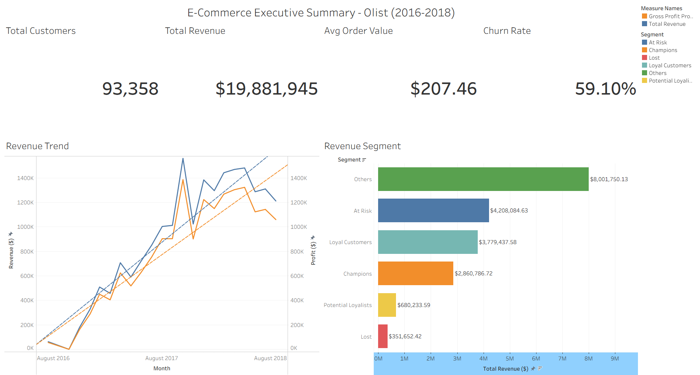

Business Intelligence
Dashboard-ready KPIs, stakeholder reporting, performance views, and decision-focused metric design.
Portfolio
Data Analyst & Economist
Decision-ready analytics, dashboards, and research workflows built with an economist's lens.
Lian turns raw datasets into clear, explainable outputs for business, policy, and people decisions. His work spans econometrics, business intelligence, machine learning, customer analytics, credit risk, workforce intelligence, and applied research.
Profile
Lian is a data analyst and economist from the Philippines. His work spans econometrics, business intelligence, and machine learning. He has built projects involving retention analytics, AI-powered churn prediction, banking risk analysis, and workforce intelligence.
Data is only valuable when it leads to better decisions. Many organizations already have the numbers; what they lack is a clear way to interpret them. That is the gap he focuses on closing.
Right now, he is especially interested in research and AI, with a focus on making analytics practical, explainable, and useful to decision-makers.
Dashboard-ready KPIs, stakeholder reporting, performance views, and decision-focused metric design.
Time-series analysis, ARDL/ECM modeling, correlation analysis, diagnostics, and policy-facing summaries.
Classification analytics, churn-risk scoring, explainability with SHAP, feature importance, and model interpretation.
Clean analysis narratives that connect methods, findings, business implications, and next steps.
Featured Work
NLP · Sentiment analysis · Business intelligence
Sentiment analysis of customer reviews and business-facing metrics for interpreting customer pain points and satisfaction trends.

Customer analytics · Retention · Segmentation
Customer behavior analysis focused on retention, segmentation, cohort patterns, and churn-risk insights.

Machine learning · Explainability · Churn risk
An explainable churn-prediction workflow using machine learning, SHAP, and retention-focused reporting.

Research & Policy
Agricultural economics · SCM · Productivity analysis
A research-style analysis exploring how supply-chain management practices relate to agricultural productivity outcomes.

Labor economics · Time-series trends · Policy insight
A labor-market analysis of employment quality, workforce composition, and underemployment patterns in the Philippines.

Macroeconomics · Migration · ARDL modeling
An econometric analysis of how macroeconomic conditions relate to Philippine emigration trends.

Applied Analytics
Media analytics · Engagement · Descriptive reporting
An audience analytics project examining engagement patterns across media and content performance data.
Banking analytics · Credit risk · Financial performance
A financial-risk project identifying borrower and loan characteristics associated with default exposure.
HR analytics · Attrition risk · Workforce intelligence
A workforce intelligence project identifying employee groups and teams with stronger attrition-risk patterns.
Portfolio website: liancataytayjk-coder.github.io
Email: liancataytayjk@gmail.com